Introducción a la computación en la nube
Tema 1 de 6 Cuarto curso, 1.º cuatrimestre ≈ 19 min de lectura
Temas de COMPNU · 1/6
- 1. Introducción a la computación en la nube
- 2. Mecanismos de virtualización
- 3. Aplicaciones y servicios en la nube
- 4. Orquestación de contenedores
- 5. Microservicios
- 6. Serverless
1.1 Introducción al cloud
Cloud es una palabra de moda de las TIC que ya cumple más de 15 años, junto a otras como IoT o Big Data. La computación cloud es un paradigma que permite el acceso ubicuo y bajo demanda a servicios TIC a través de Internet. El término "nube" viene de cómo se dibujaba la red en los diagramas: una nube que abstrae la complejidad de su infraestructura.
Supone una nueva forma de proveer y consumir capacidades TIC, basada en cuatro ideas: escalabilidad y elasticidad, capacidades como servicio (los modelos "as a Service", *aaS), autoservicio bajo demanda y pago por uso.
1.1.1 El problema que resuelve
El ejemplo clásico es Forbes.com, que ofrece información bursátil en tiempo real: sus servidores van a tope en horario laboral de lunes a viernes y casi vacíos el resto del tiempo. Pasa lo mismo con las demandas estacionales (ventas de Navidad), los eventos masivos y puntuales (un Mundial de fútbol) y los consumos masivos (streaming de vídeo, juegos online).
El problema es cómo dimensionar la capacidad de los servidores para ajustarla a la demanda. Si compras servidores para el pico, sobredimensionas y pagas por máquinas paradas la mayor parte del tiempo; si compras para la media, infradimensionas y el servicio se cae en los picos.
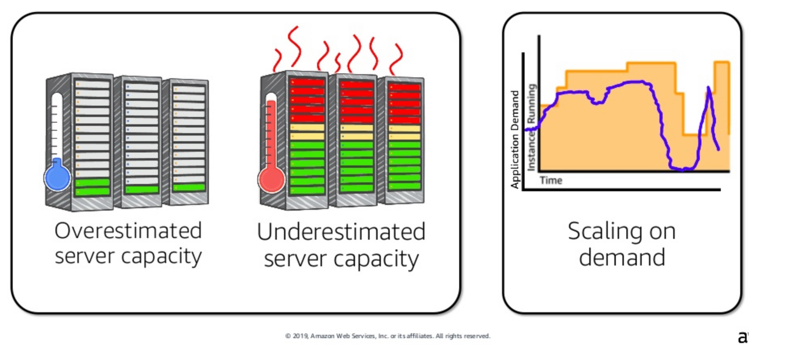
Capacidad sobreestimada (servidores fríos, dinero desperdiciado), infraestimada (servidores saturados) y escalado bajo demanda (la capacidad sigue a la demanda).La respuesta del cloud es el aprovisionamiento bajo demanda: consume lo que necesites y paga por lo que consumas, de modo que la capacidad sigue a la demanda en cada momento.
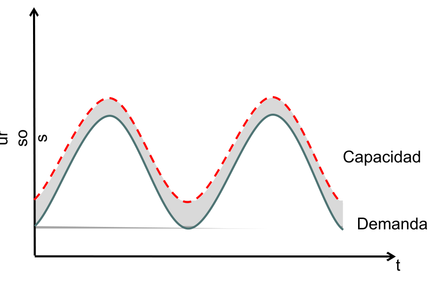
Analogía: la electricidad
Nadie tiene una central eléctrica en casa dimensionada para el día que enciende todos los aparatos a la vez: te conectas a la red, consumes lo que necesitas en cada momento y pagas por los kWh gastados. El cloud hace lo mismo con servidores, almacenamiento y red.
1.1.2 Qué cambia con el cloud
Con el cloud no hace falta comprar ni administrar hardware: se "alquila" cuando se necesita, y hay muchos proveedores (Amazon EC2, Microsoft Azure, GCP, Rackspace, Alibaba, ElasticHosts...). En el ejemplo de Forbes, bastaría con alojar el servidor web en un proveedor, aprovisionar servidores cada día y liberarlos por la noche, pagar por el tiempo consumido y dejar que el proveedor se preocupe del hardware.
Para los proveedores también supone un cambio en cómo gestionan y ofrecen sus recursos. Sus plataformas son flexibles y "elásticas": se adaptan a la demanda real, soportan mejor los picos, son escalables y tolerantes a fallos. La base tecnológica es la virtualización: los recursos se virtualizan como máquinas virtuales (VMs) que se despliegan dinámicamente bajo demanda, y se exponen como servicios a través de interfaces estandarizadas.
1.2 Definición de cloud
1.2.1 Tres definiciones de referencia
La del NIST (National Institute of Standards and Technology, EE. UU.) es la más referenciada y la que usa el gobierno americano con sus proveedores:
"La computación cloud es un modelo que permite el acceso por red ubicuo, cómodo y bajo demanda a un conjunto compartido de recursos de computación configurables (redes, servidores, almacenamiento, aplicaciones y servicios) que pueden aprovisionarse y liberarse rápidamente con un mínimo esfuerzo de gestión o interacción con el proveedor."
La norma ISO/IEC 22123-1:2023 (vocabulario de cloud computing) la define como un paradigma que permite el acceso por red a un conjunto escalable y elástico de recursos físicos o virtuales compartibles, con aprovisionamiento y administración en autoservicio y bajo demanda.
El informe de la ENISA (Agencia Europea de Seguridad de las Redes y de la Información) la describe como un modelo de servicio bajo demanda para la prestación de TI, a menudo basado en virtualización y tecnologías distribuidas, con seis rasgos: (1) recursos con alto grado de abstracción; (2) escalabilidad y flexibilidad casi instantáneas; (3) prestación casi instantánea; (4) recursos compartidos (hardware, bases de datos, memoria...); (5) servicio bajo demanda con pago por uso; y (6) gestión programática (por ejemplo, mediante API).
Para entenderlo mejor
NIST SP 800-145: The NIST Definition of Cloud Computing — la definición original, de solo 3 páginas (documento, inglés; enlazado en las diapositivas).
1.2.2 El modelo 5-3-4 del NIST
El modelo del NIST, usado también como referencia en Europa, se conoce como "5-3-4": 5 características esenciales, 3 modelos de servicio y 4 modelos de despliegue. Es la estructura del resto del tema.
1.3 Características esenciales
| Característica | Qué significa |
|---|---|
| Autoservicio bajo demanda (on-demand self-service) | El consumidor aprovisiona por sí mismo capacidades (tiempo de CPU, almacenamiento, datos) cuando las necesita, de forma automática y sin interacción humana con el proveedor |
| Amplio acceso por red (broad network access) | Las capacidades están en la red y se accede con mecanismos estándar desde clientes heterogéneos (móviles, estaciones de trabajo...) |
| Agrupación de recursos (resource pooling) | Los recursos del proveedor se agrupan para servir a muchos clientes con un modelo multi-tenant (multiinquilino) y se asignan y reasignan dinámicamente según la demanda. El cliente no controla la ubicación exacta, pero puede elegirla a alto nivel (país, estado o datacenter) |
| Elasticidad rápida (rapid elasticity) | Las capacidades se aprovisionan y liberan rápida y elásticamente según la demanda; para el consumidor parecen ilimitadas y disponibles en cualquier momento y cantidad |
| Servicio medido (measured service) | El sistema mide el uso de recursos (normalmente pago por uso) al nivel adecuado (almacenamiento, procesamiento, ancho de banda...). El uso puede monitorizarse, controlarse e informarse, con transparencia para usuario y proveedor |
Analogía: un hotel frente a comprarte una casa
Multi-tenant es como un hotel: muchos huéspedes comparten el mismo edificio, cada uno en su habitación aislada. Pides una habitación en recepción sin hablar con el arquitecto (autoservicio), puedes pasar de una individual a una suite en minutos (elasticidad), eliges la ciudad pero no la habitación exacta (resource pooling) y pagas por noches (servicio medido).
1.4 Modelos de servicio
Las capacidades se ofrecen como servicios, y el NIST define tres modelos. Dependen entre sí (unos se construyen sobre otros), se orientan a usuarios y escenarios distintos, y en cada uno cambia qué gestiona el proveedor y qué el consumidor. La forma más clara de verlos es la pila de responsabilidades: de abajo arriba, networking, storage, servers, virtualization, O/S, middleware, runtime, application y data.
IaaS (Infrastructure as a Service). El proveedor es dueño del hardware y lo ofrece como servicio mediante interfaces para gestionarlo. El consumidor aprovisiona recursos de computación (almacenamiento, CPU, red) donde ejecuta su software: no controla la infraestructura física, pero sí el sistema operativo, el almacenamiento, la red y las aplicaciones. Perfil: arquitectos y administradores de sistemas. Ejemplos: AWS, Microsoft Azure, Google Compute Engine.
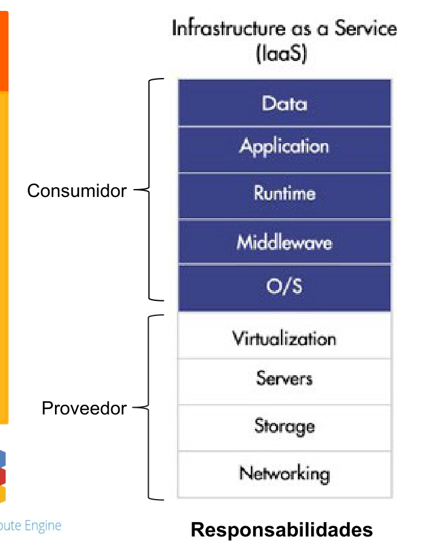
El proveedor gestiona de la red a la virtualización; el consumidor, del sistema operativo hacia arriba.PaaS (Platform as a Service). El consumidor despliega aplicaciones (propias o adquiridas) desarrolladas con entornos de programación que soporta el proveedor, sobre la infraestructura de este. No controla ni la infraestructura ni el entorno de despliegue, pero sí sus aplicaciones y, posiblemente, la configuración del entorno. Perfil: desarrolladores. Ejemplos: OpenShift, CloudBees, Heroku, Cloud Foundry.
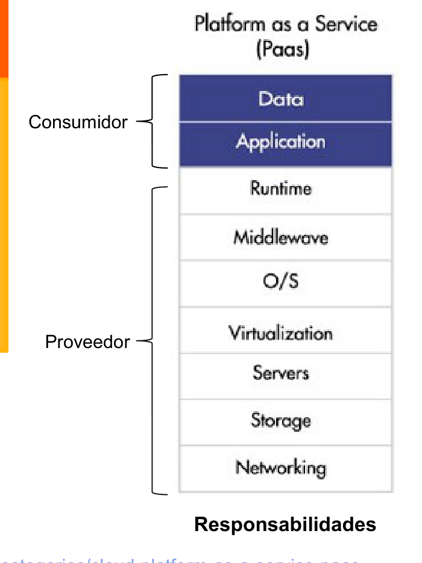
El consumidor solo gestiona su aplicación y sus datos.SaaS (Software as a Service). El consumidor usa las aplicaciones del proveedor, que se ejecutan en la nube. No controla ni la infraestructura ni las capacidades de la aplicación, pero posiblemente sí su configuración personal. Perfil: empleados, profesionales o particulares. Ejemplos: Google Docs, Office 365, Git, Salesforce, Moodle.
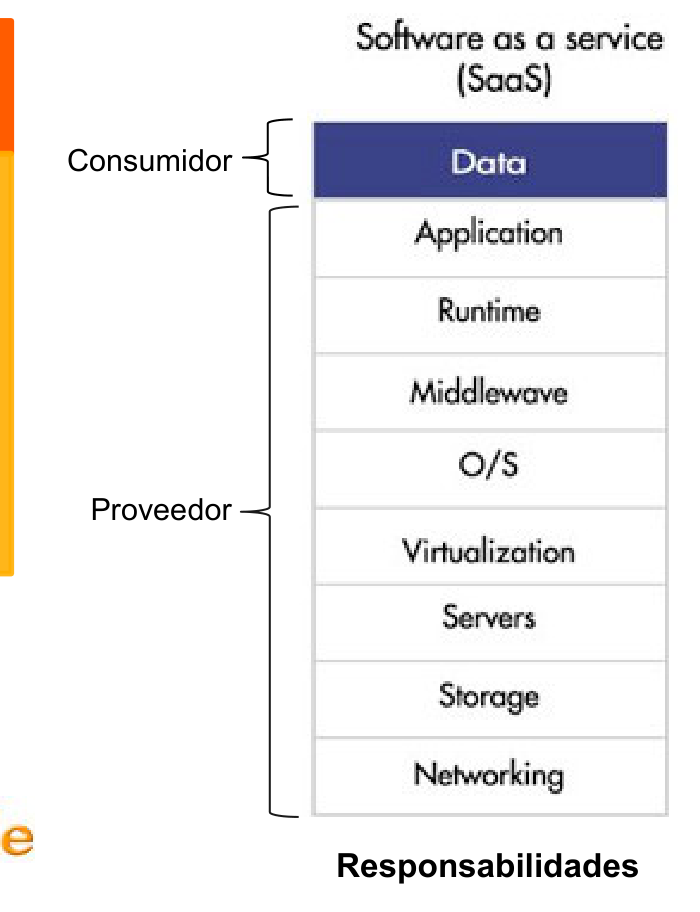
El consumidor solo gestiona sus datos; todo lo demás es del proveedor.| IaaS | PaaS | SaaS | |
|---|---|---|---|
| Qué recibes | Máquinas, discos y red virtuales | Una plataforma donde desplegar tu código | Una aplicación lista para usar |
| Tú gestionas | SO, middleware, runtime, aplicación, datos | Aplicación y datos | Solo tus datos y ajustes personales |
| Usuario típico | Administradores de sistemas | Desarrolladores | Usuarios finales |
| Ejemplos | AWS EC2, Azure, Google Compute Engine | Heroku, OpenShift, Cloud Foundry | Google Docs, Office 365, Salesforce |
Analogía: la pizza
IaaS es alquilar una cocina equipada: pones los ingredientes, cocinas y sirves tú. PaaS es comprar una base de pizza ya hecha y un horno: solo pones los ingredientes que quieras. SaaS es pedir la pizza a domicilio: solo decides cuál y te la comes.
Para entenderlo mejor
¿Cuál es la diferencia entre IaaS, PaaS y SaaS? — los tres modelos comparados en poco tiempo (vídeo, 3:20).
1.5 Modelos de despliegue
El NIST define cuatro modelos de despliegue, según a quién está destinada la infraestructura.
Cloud público. Infraestructura para uso del público o de empresas en general, propiedad del proveedor (una empresa, una universidad, un organismo estatal...). Tiene una interfaz interna para gestionar su infraestructura virtualizada y otra externa para que los clientes gestionen sus recursos.
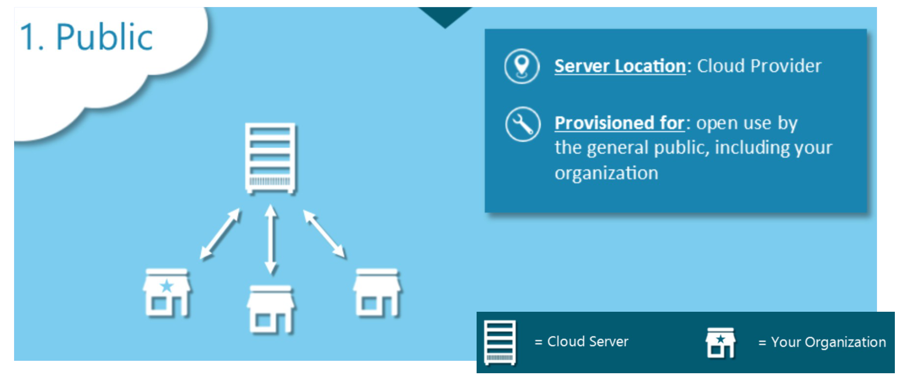
Cloud privado. Para uso exclusivo de una organización, aunque con múltiples clientes dentro de ella (por ejemplo, sus departamentos). Puede ser de su propiedad (on-premise), alquilado (off-premise) o una combinación, y permite una gestión flexible y ágil de los recursos. Los grandes proveedores públicos de IaaS empezaron creando clouds privados para gestionar mejor sus propios datacenters.
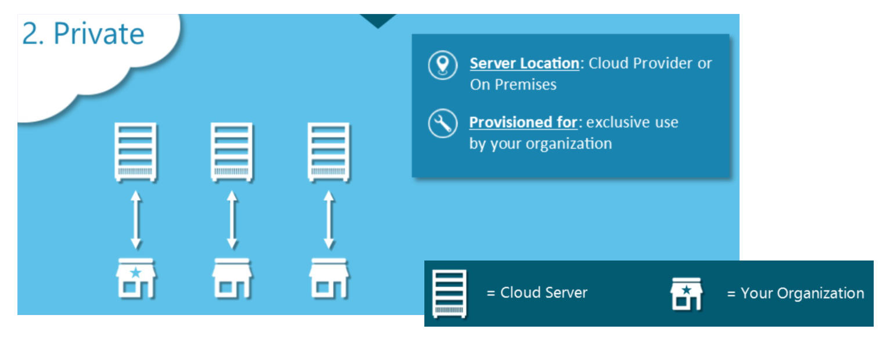
Cloud comunitario. Para una comunidad de organizaciones con intereses comunes. Puede ser propiedad de una o varias de ellas, alquilado o una combinación.
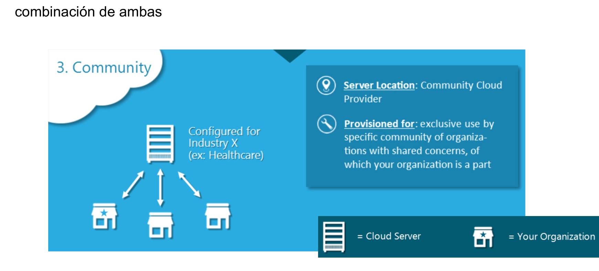
Cloud híbrido. Combinación de cloud privado y público, unidos por tecnologías (propietarias o estándar) que permiten la portabilidad de datos y aplicaciones. Permite atender los picos de carga obteniendo recursos del cloud público, de forma transparente para los usuarios del privado.
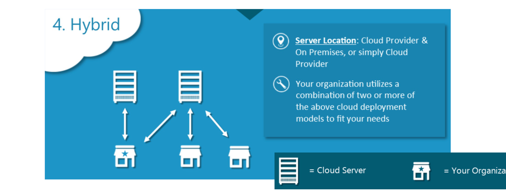
Hay además otros modelos: la federación de clouds, una extensión del híbrido que requiere estándares que garanticen la interoperabilidad, y el cloud brokering, el uso conjunto de varios proveedores.
1.6 Proveedores públicos
Un cloud público da acceso a recursos hardware virtualizados (computación, almacenamiento, red...) con pago por uso, a través de una interfaz interna de gestión y una interfaz externa abierta para los clientes. Una aplicación típica (balanceador + servidores de aplicación + bases de datos) cuesta, según las diapositivas, entre $0,085 y $2,88 por hora.
1.6.1 El mercado
Según el cuadrante mágico de Gartner de 2026, hay tres líderes claros: AWS, Google y Microsoft, seguidos de Oracle y Alibaba. AWS domina desde hace 10 años: facturó $128,7B en 2025, lidera la cuota de mercado de infraestructura cloud con un 29% en 2025, supone casi el 60% del beneficio operativo de Amazon, tiene la oferta más madura y variada y es la elegida por la mayoría de las grandes compañías (algunas gastan más de $300-400M al año). Azure es la opción principal de las empresas que usan tecnologías Microsoft, y Alibaba es líder en China, aunque su oferta internacional es menos madura.
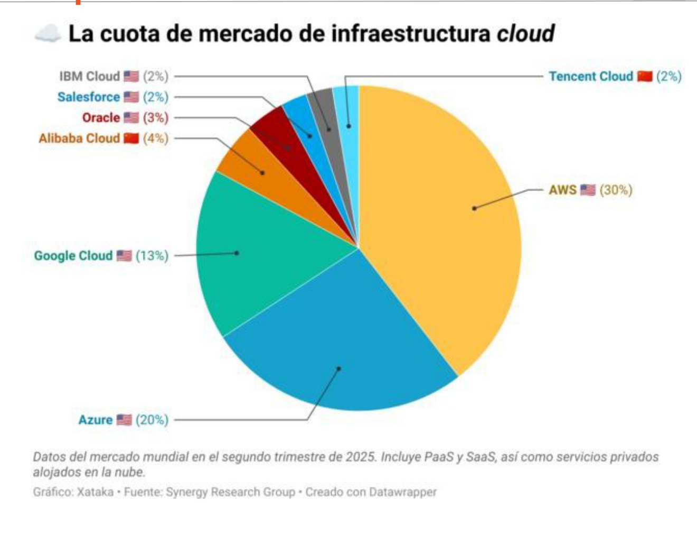
Segundo trimestre de 2025: AWS 30%, Azure 20%, Google Cloud 13%, Alibaba 4%, Oracle 3%, Salesforce 2%, IBM 2%, Tencent 2%.El texto de la diapositiva da un 29% a AWS en 2025, y la gráfica, un 30% en el segundo trimestre de 2025: son dos mediciones distintas.
1.6.2 Oferta IaaS de los principales proveedores
| AWS | Azure | ||
|---|---|---|---|
| Computación | EC2, Auto Scaling, ELB, ECS, LightSail | Virtual Machines; Load Balancer, Application Gateway; Container Service, Container Instances | Compute Engine, Auto Scaler, Load Balancing, Container Engine |
| Almacenamiento | S3, EBS, Glacier, EFS | Storage, Backup | Storage, Persistent Disk, Coldline |
| Red | Elastic IP, VPC, Route 53, Direct Connect | Public IP, Virtual Network, DNS, Traffic Manager, Express Route | External IP Address, Virtual Network, DNS, Interconnect |
1.6.3 Modos de tarificación
Cada servicio se cobra de forma distinta. Lo esencial:
Computación. Amazon EC2 cobra por hora (mínimo 1 h; según tipo de instancia y SO) o por segundo en algunos casos, más los GB/mes de almacenamiento EBS, y permite instancias reservadas y spot más baratas; ELB se cobra por hora más GB procesados o LCU/hora (LB Capacity Units); Auto Scaling es gratuito (se pagan las métricas de CloudWatch); ECS es gratuito (se pagan los EC2 y EBS usados), y LightSail, por hora hasta el máximo del plan ($5-$100/mes) más el exceso de tráfico. Azure Virtual Machines cobra por minuto más almacenamiento, con autoescalado y balanceador incluidos en la mayoría de instancias; Load Balancer, por reglas/hora más GB (gratis sin reglas); Application Gateway, por hora más datos; Container Service, gratis (se pagan los recursos); Container Instances, por instancia más GB/s y cores/s. Google Compute Engine cobra por minuto (mínimo 10), con un descuento de hasta el 30% si se usa entre el 25% y el 100% del periodo de facturación, e instancias interrumpibles (preemptible), personalizadas y reservadas; Load Balancing, por regla/hora más GB; Auto Scaler, gratis; Container Engine, por hora para clusters de más de 6 nodos más las instancias.
Almacenamiento. S3: por GB/mes (por tramos), número de solicitudes y administración opcional, más barato con redundancia reducida o acceso infrecuente. EBS: por GB/mes según tipo de disco (SSD o magnético) y uso, más snapshots e IOPS opcionales. Glacier: por solicitudes de subida/recuperación y GB recuperados según la modalidad (expedited, standard, bulk). EFS: por GB/mes. En Azure, los discos se cobran por GB/mes según tipo y redundancia, más transacciones (estándar) o snapshots (premium); Backup, por instancia protegida más almacenamiento. En Google, Storage cobra por GB/mes, solicitudes API y GB recuperados (en nearline y coldline), según sea multirregional, regional, nearline o coldline; Persistent Disk, por GB/mes según tipo.
Red. En AWS, una IP elástica asignada a una instancia es gratis; se cobran las adicionales o las no asignadas, y los remapeos (100 gratis). VPC es gratuita (se pagan la VPN y el NAT gateway); Route 53, por zona, políticas de tráfico y consultas; Direct Connect, por puerto/hora y GB salientes. Azure cobra las IPs públicas por hora según tipo, la Virtual Network es gratuita (se pagan los gateways), DNS por zona y consultas, Traffic Manager por consultas y endpoints, y Express Route por puerto/mes. Google cobra las IPs externas solo si no se usan (las IPv6, nunca), la Virtual Network es gratuita, DNS por zonas y solicitudes, e Interconnect por conexión más tráfico saliente.
Para comparar ofertas hay comparadores como cloudprice.app y howmuchcloud.com.
1.7 Gestores de cloud
1.7.1 Desplegar un cloud privado
Para montar un cloud privado on-premise se usa un middleware específico, las plataformas de administración cloud, que permiten instalar, configurar y gestionar tu propio cloud. Sirven para un modelo privado o híbrido, e incluso como base de un cloud público sobre infraestructura propia.
| Tipo | Ejemplos |
|---|---|
| Open source | OpenStack, OpenNebula, CloudStack |
| Comerciales (enterprise) | VMware Cloud Foundation, Azure Local, Nutanix Cloud Infrastructure |
| Infraestructura integrada (cloud-on-premises) | AWS Outposts, Google Distributed Cloud, Dell APEX, HPE Greenlake |
1.7.2 OpenStack
OpenStack es un proyecto open source iniciado en 2010 por la NASA y Rackspace para desarrollar un sistema operativo cloud abierto para clouds privados y públicos. Tiene el apoyo de muchas empresas a través de la OpenInfra Foundation (antes OpenStack Foundation), como Huawei, Ericsson, Microsoft, WindRiver u Okestro, y es la base de muchas distribuciones cloud de Linux (Red Hat, Ubuntu, Debian, SUSE). Hoy es un proyecto colaborativo con licencia Apache 2.0; la versión actual (abril de 2025) se llama Epoxy.
Es un "sistema operativo para el cloud": controla los recursos de computación, almacenamiento y red de un centro de datos y permite a los usuarios aprovisionarlos mediante una interfaz web o una API.
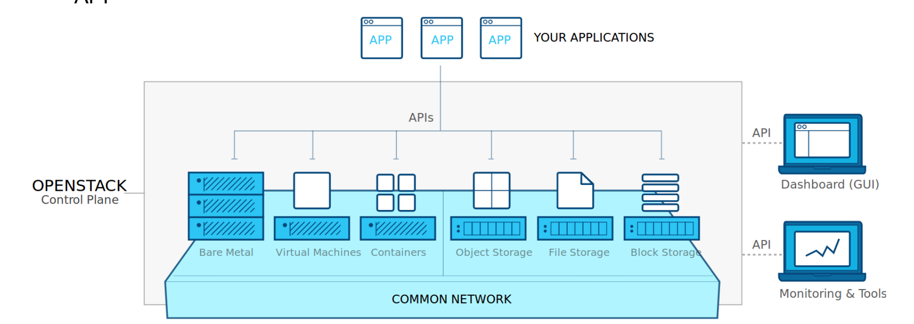
El plano de control de OpenStack gestiona bare metal, VMs, contenedores y almacenamiento de objetos, ficheros y bloques sobre una red común, y los expone por API a las aplicaciones, al panel web y a las herramientas de monitorización.En realidad es una colección de proyectos, cada uno con un nombre propio:
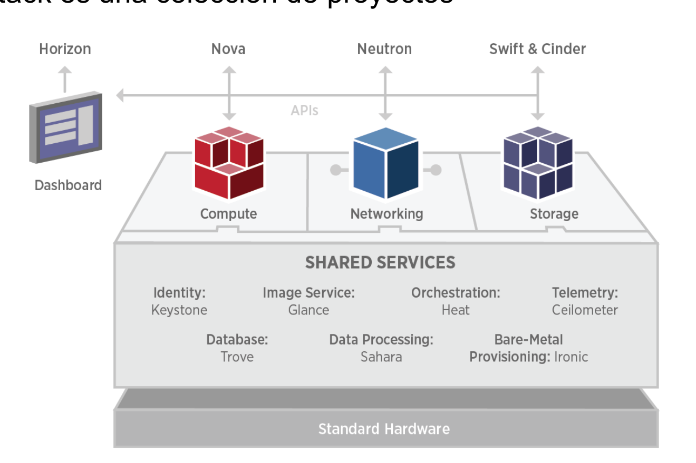
| Proyecto | Función |
|---|---|
| Horizon | Panel web (dashboard) |
| Nova | Computación |
| Neutron | Red |
| Swift y Cinder | Almacenamiento de objetos y de bloques |
| Keystone | Identidad |
| Glance | Imágenes |
| Heat | Orquestación |
| Ceilometer | Telemetría |
| Trove, Sahara, Ironic | Bases de datos, procesamiento de datos, aprovisionamiento bare-metal |
1.7.3 OpenNebula
OpenNebula es un toolkit open source para clouds IaaS que permite implementar clouds privados, públicos o híbridos. Se desarrolló en la Universidad Complutense de Madrid y hoy lo mantiene la empresa OpenNebula Systems. Tiene una arquitectura abierta y adaptable: usa estándares para la interoperabilidad y la portabilidad, y soporta múltiples servicios de virtualización, seguridad, almacenamiento y red.
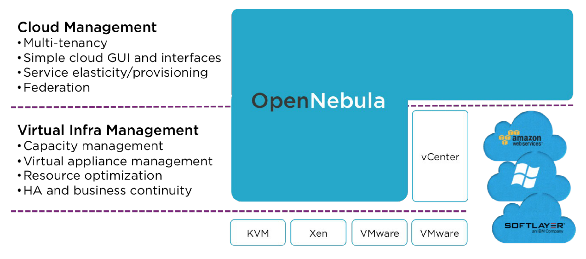
Gestión del cloud (multi-tenancy, interfaces, elasticidad, federación) y de la infraestructura virtual (capacidad, optimización, alta disponibilidad) sobre hipervisores KVM, Xen o VMware, con conexión a clouds públicos.1.8 Beneficios, retos y recomendaciones
1.8.1 Beneficios
| Beneficio | Por qué |
|---|---|
| Reducción de costes | Pago por uso, sin inversión inicial ni hardware que se queda desfasado; facilita la innovación → oportunidad para pymes y startups |
| Mejora de la eficiencia | Rapidez y escalabilidad al aprovisionar; acceso a recursos (teóricamente) ilimitados → más competitividad; se delega la gestión TIC → más recursos para la actividad propia |
| Flexibilidad | Los proveedores ofrecen las últimas tecnologías; se puede trabajar desde cualquier lugar |
| Continuidad del negocio | Facilita tolerancia a fallos y alta disponibilidad (redundancia, replicación, distribución geográfica); asistencia 24/7 |
| Seguridad | Los proveedores suelen tener mejores prácticas y sistemas que sus clientes e invierten en certificaciones y cumplimiento normativo |
1.8.2 Retos
| Reto | Problemas |
|---|---|
| Dependencia de la red | Ancho de banda limitado, prestaciones impredecibles (redes lentas en hora punta), necesidad de estar siempre conectado |
| Dependencia del proveedor (vendor lock-in) | Difícil mover cargas entre proveedores, fallos masivos o cese de actividad del proveedor, escasa interoperabilidad por falta de estándares |
| Aspectos legislativos | Que el proveedor cumpla la ley (LOPD, RGPD, propiedad intelectual...), qué legislación se aplica en un conflicto, regulaciones sectoriales (salud, banca, pagos...) |
| Integridad de los datos | Miedo a perder el control de los datos, privacidad y confidencialidad (¿podemos fiarnos del proveedor?), garantías al sacar datos de la UE |
| Seguridad | Cifrado de la información confidencial, aislamiento en la virtualización y responsabilidad compartida entre proveedor y consumidor según el modelo (IaaS, PaaS o SaaS) |
1.8.3 Recomendaciones
Analizar el nivel de seguridad necesario. No todas las aplicaciones manejan información sensible: cada tipo (personal, corporativa, de ciudadanos) necesita un nivel distinto, y para las más sensibles conviene un despliegue privado o híbrido. La seguridad es una responsabilidad compartida, y la parte del proveedor depende del modelo de servicio.
Estar preparado para lo inesperado. Tener un plan de continuidad del negocio con opciones dentro y fuera del cloud (un proveedor alternativo o un servicio DRaaS, Disaster Recovery as a Service); usar arquitecturas tolerantes a fallos o multiproveedor (por ejemplo, replicar servicios en varias zonas de disponibilidad de AWS); mantener backups locales o en terceros, y adoptar modelos híbridos.
Analizar la oferta del proveedor. En cuanto al nivel de servicio: condiciones, soporte, indemnizaciones por interrupciones y si se puede negociar el SLA (Service Level Agreement). En cuanto a la seguridad: si cumple estándares y certificaciones, la legislación (LOPD, RGPD), cómo garantiza privacidad, autenticación y control de acceso, y qué responsabilidad asume si se pierden los datos.
1.9 Ideas clave
- Cloud: acceso ubicuo y bajo demanda a servicios TIC por Internet; escalabilidad/elasticidad, *aaS, autoservicio, pago por uso. Resuelve el problema de dimensionar para una demanda variable. Base: virtualización.
- Definiciones: NIST (la más usada), ISO/IEC 22123-1:2023, ENISA. Modelo NIST 5-3-4.
- 5 características: autoservicio bajo demanda, amplio acceso por red, resource pooling (multi-tenant), elasticidad rápida, servicio medido.
- 3 modelos de servicio: IaaS (tú gestionas desde el SO; administradores), PaaS (tu aplicación; desarrolladores), SaaS (solo usas la aplicación; usuarios finales).
- 4 modelos de despliegue: público, privado (on/off-premise), comunitario, híbrido (picos al público); además federación y brokering.
- Mercado: AWS (~29-30%), Azure (20%), Google (13%); tarificación por hora/minuto/segundo + almacenamiento + transferencia.
- Gestores de cloud privado: OpenStack (NASA + Rackspace, 2010; Nova, Neutron, Swift/Cinder, Keystone, Glance, Horizon...) y OpenNebula (UCM).
- Beneficios: costes, eficiencia, flexibilidad, continuidad, seguridad. Retos: red, vendor lock-in, legislación, integridad de datos, seguridad (responsabilidad compartida).